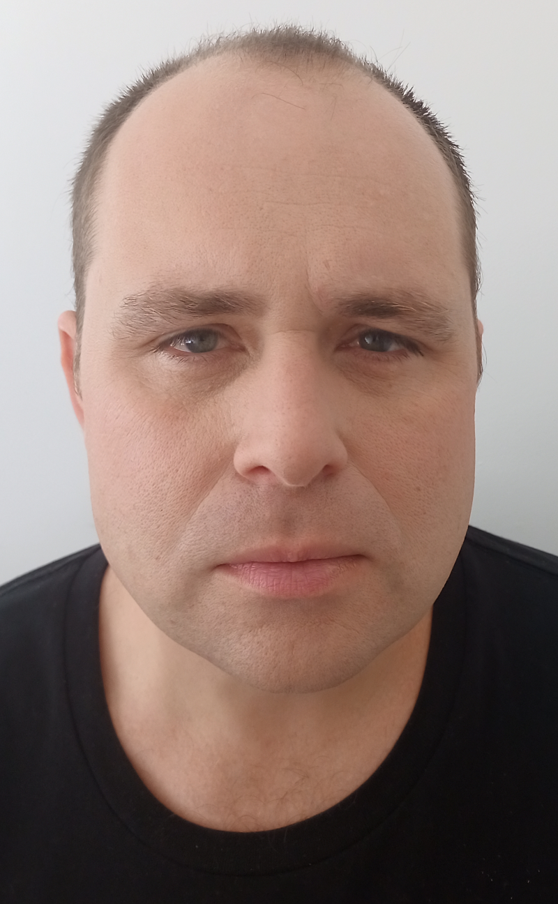
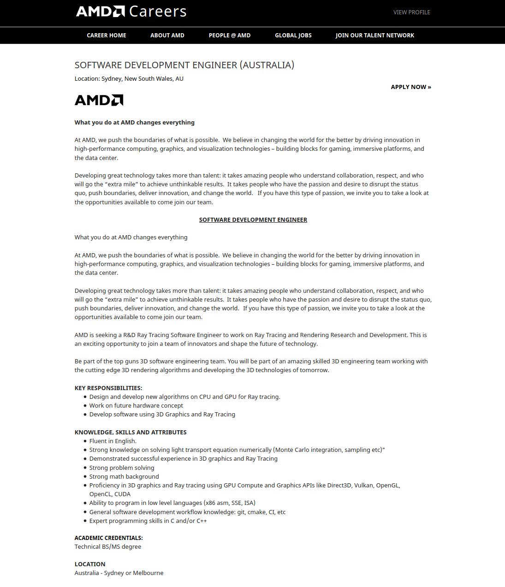

Personal Information
|  |
Student: |
Ry Thomas McLean |
Student Number: |
s3874574 |
|
Student Email: |
3874574@student.rmit.edu.au |
|
I am an industrious person who completes tasks to perfection, studying the degree of Information Technology at RMIT Australia. I am a creative and wish to use my creativity as a extension to that of the artistic process. I have always been the default technologist. I wish to find my passion again, rather then just saying no don't know anything. It is time for me to gain respect to be proud and be respected in this field. Gaining this degree at this prestigious education institution. I have the view and the vision that I can make a great career in technology from the skills and the education acquired. My hobbies are varied, I am very creative and physiological person. I live the arts. I love painting. I enjoy being nice, honest and sincere.
I treasure the world around us. I love everyone in it.
Interest in Information Technology
My motivation and interest in Information Technology now is purely economic. I am from a lower socioeconomic demographic, escape my current financial trajectory and path in life. I want thrive not just scrape to survive. I wish to have friends, a partner and just love. The opportunity to simply just buy food every week. In the Information Technology sector I can achieve my goals of making a rewarding career. The life style of what I want and envisioned when I was younger.
Obtaining jobs roles that require connections where in that I can show my abilities. Once completing the Bachelor of Information Technology at the Royal Melbourne Institute of Technology, RMIT. To make my institution, teachers proud of having me as a alumni. I have chosen RMIT distance learning for the opportunity it will give to me. Opportunities that would have never been given to a person from a lower social economic demographic. I may want study and experience life in Melbourne or internationally, learning about the history of my educational institution. I wish to be the next 'Benjami Kaiser'.
Inspired by the educational staff that have knowledge and are masters of their field. I want the spark, passion, interest and the vision in Information Technology that I had when I was younger. That the RMIT educational staff and the course are quickly bringing back to me. Rather then condemnation of Information Technology that I have currently.
I wish to learn more about programming and technology from a different perspective. Wanting to 'cultivate my mind'. I am a creative and hard worker. Information Technology can be implemented in a way that is creative. I contemplate ideas all the time and I would like the knowledge, motivation, drive and resources to complete these projects and ideologies. That RMIT has made me be excited about.
I have never played computer games. I am a professional and a worker. I prefer the boring stuff that people traditionally overlook. I like programming, statistics and complex administration. From desktop applications to website back-end's. Obscure programming languages like Ada, COBOL or FORTRAN. To administering complex mainframe's and their operating systems like VMS, Commercial databases like Oracle DBMS to IBM's DB2. I am also interested in cyber-security in all sectors in a fortune 500. I like complex jobs and complex task. I think I just like all fascists of information technology.
I will set myself targets and goals to complete this degree for the opportunities it will bring me. One of these goals was to go to university. Something that I never though I would have the opportunity. Where I could develop my skills further. I have always been industrious with technology projects. My interest started I was very young. I was inspired by my uncle who was a software engineer. The lifestyle the exclusivity of his field. I always thought that this could be me one day. I wish to better my situation, build products that are useful complete, professional in real programming languages.
Honesty and ethics are important to me.
Ideal Job
Job advertisement
This job was gathered from the AMD Careers website from external source provider. The job advertisement can be viewed on AMD careers website, AMD (2021)
Description
My ideal job would be that of a software developer or software engineer to develop and be apart of the software development and implementation process. It appeals to me because I could learn more about the product life cycle and project management. The role is collaborative and whilst still being creative. Allow me to innovate showing my abilities, harnessed from this degree and learning experience.
I would learn about deliverable, maintainable, scalable, reliable and secure programming and practices. The advertised position of software development engineer quotes that 'AMD pushes the boundaries of what is possible'.
I achieve the impossible, I will create new. In order to achieve this I will need knowledge and research developments. I am pushing the boundaries of what is possible from my demographic. I can achieve, I can thrive.
This company has changed and continues impact and innovate the Information Technology sector. I would go above and beyond for this role, passionate about the economical opportunities of this profession. It my goal to be gainfully employed. Buy clothes, food, pay bills, purchase a decent new computer, that can Microsoft Windows, rather than the relevant open-source software. This is what appeals to me about this role, the ideal job of a software engineer that will allow me to showcase my abilities that I will learn from this degree from skilled education staff and RMIT.
Skills, qualifications and experience required for this position
The skills, qualifications and experience required for this role are a Bachelor in ICT related and subjects. With a strong mathematical adaptability and working knowledge of light transport equation numerology. Problem solving, ability to undertake issue analysis and resolution skills. This position also requires excellent analytical research and reasoning capacities. Also being a expert with C/C++ and CUDA(Suspicious,nVidia)?
Description of the skills and qualifications that are current.
I would be perfect for this role as that I have experience in programming. I am dependable, commutative, learning agile, productive individual with great analytical, researching and reasoning capacities. My capabilities and abilities are results driven. I have the relevant knowledge and the abilities. I can program proficiently. My skills are excellent and the role is an obtainable software development position goal for my abilities that I currently have. These current skills will be expanded by the knowledge from my bachelor in Information Technology.
A plan describing how to obtain the skills, qualifications and experience required for the position building on the one I currently have now.
I am working on completing the bachelor degree in Information Technology. I am a proficient programmer however you can always learn more be better. I will acquire the bachelor of Information Technology it will help me to network effectively whilst working towards obtaining a future role such as this software engineering position. I could establish myself as a software development engineer, a developer. Moving closer to my educational institution RMIT. That will be proud to have me as an alumni.
Personal Profile
Results of Myers Briggs
The result of the my Myers-Briggs Type Indicator test was the personality type of ENFJ. The ENFJ is a personality that is a warm and extroverted. That love to engage with people in a unique and creative way. Individuals who value empathy and ethics. Being a valued member of the group is imported to them as they feel that they can give more to a situation being passionate helping others while working on common goals. Creative passionate and insightful. They will be vocal about how they feel about others as not to beet around the bush, vocal about their values. Straight forward and to the point.
The ENFJ a protagonist finds it difficult to respect anyone who takes shortcuts and others who refuses to challenge the status quo. They are the most likely to enjoy going on short spontaneous trips.
Valuing the connection and communication with others they like conversing with a range of people. They are protective enjoying responsibility and family. They avoid conflicts resolving with compassion and fairness. Roles that would be suited and effective for them would be boss.
Famous ENFJ's include Barack Obama, Oprah Winfrey, Maya Angelou, Malala Yousafzi and Ben Affleck(I don't know why)
More details of the test and results can be found on Myers Brigs by 16personalities, 16Personalities (2011)
Results of a Learning Style Test
The Education planning learning style test results conclude that I am a a Visual/Tactile learner. They remember and understand things by site. Learning from doing and pictures visualised in their head. They are neat, clean and hands on. When bored they will tinker finding something to watch, needing to take frequent breaks. We are attracted to colour and spoken language. Enjoying physical forms of expression of encouragement, like pat on the back. They need to see things not just hear things to learn well. Learning style test was taken at Pennsylvania Higher Education Assistance Agency, Planner (2011)
Results of a Further Online Test
I have included two online tests as to give an accurate overview of my personality relation to this course.
DISC
The further online test that I chosen was the DISC assessment. This test is based on the work of William Moulton Marston, a psychologist. The DISC model centres on four DISC factors; Dominance, Influence, Steadiness and Conscientiousness. Individuals have unique values, beliefs and perspectives. This test helps to identify personalities to make interaction cohesive and easier. The DISC test helps understand and empathy and application to your everyday behaviour and your workplace interaction. The DISC result that best categories and describes me is the Motivator-I.
The Motivator-I personality are enthusiastic, cheerful and outgoing. They typically have an easy, relaxed, casual manner when communicating or interacting with others. The DISC test and results created by crystalknows,Crystal (2015)
The Leadership Style Test
The leadership style results indicated that my leadership style was that of transformational. This leadership style leads by example, inspiring others to be innovative and creative to achieve goals and KPI targets. Motivating with intellectual stimulation and inspirational incentives for the individual. Recognising abilities within the individual or team, achieving the results for them as a whole.
Transformational leaders motivate and inspire their workers to achieve. Growing and learning from prior experiences to achieve future success. They are results driven with the focus on future possibilities being creative. Best suited for innovation in the Information Technology sector. They respect and have consideration to achieve the best results for the team and the organisation as a unit. With a view of positivity of the future and strategically plan objectives , targets and goals. This leadership style test was taken at the University of Southern California Blog, Price (2018)
What do the results of these tests mean for you?
Personality test shows how to develop the positive and negative attributes of my identified personality type has. The Myers-Briggs personality test shows that I have extroverted behavioural traits. Results suggest that the ENFJ personality types are of the less common type. I am a passionate, creative and physiological. My learning style test suggests to effectively learn using flashcards, visualise things, fiddle, participate in physical activities, draw pictures and be creative to explain new concepts, colour coding things and most important avoiding distractions.
The leader ship and DISC show my abilities to interact with others. To lead effectively with positive individualised results. This type has positive and abilities that can be hard for me to realise the positives of myself.
I am not a believer of these one dimensional tests. Finding them quite indecisive and inconclusive. I think I relate to all personality traits. This seems to be a identifiable aspect of my personality type.
How do you think these results may influence your behaviour in a team?
Theresults effect my behaviour in a team in how I react with others. I am an an ENFJ which is and extroverted personality type so I will not struggle presenting my ideas to a team. Using visual aids for efficiency and understanding. I can be a introvert when needed so I will not struggle in presentation. I am naturally gifted in choosing between the expression types. I am not reserved, I say what I think. It is key to lead by example because my type wants and is best in charge.
I am thoughtful, impassioned and creative. Working in a team is a positive experience achieving a common collaborative results. Targeting and rewarding individuals for there efforts. I have to take breaks and not be distracted. Although there are positive and negative about each personality type.I enjoy comradery and hard work. I will enjoy working in the coming team environment I am enthusiastic about the process.
How should you take this into account when forming a team?
There positives in every individual. I am enthusiastic about forming a team. I will have be careful to accommodate introverts and others in charge. The ideas and expressions they have. I gain respect to easily lead and find others that I can lead by example. Everyone must be evaluated equally any negativity can be over come with acceptance and complementary attitude. A positive collaborative approached with team members can be achieved with a positive attitude. Effective communication is key and having the right attitude learning to take a step back.
Project Idea
Overview
My project will be a strictly validating web engine, the foundations of a web-browser. Innovations in technology and increased hardware power has facilitated multimedia and scripting. Allowing designers to be creative. The creation of websites that are aesthetically pleasing. Pushing the boundary of the layout engine to its limit. Creators of web content are frustrated with the capabilities of HTML and therefore web browser. The traditional browser engine must render every site correctly. My product will be different to that of traditional web browsers because it will not try to render every site it will try to render only XML with only of the use of XSLT for styling complying strictly to a DTD. The capacity will beyond the minimal viable product of Javascript and HTTPS will be omitted.. It will be an effective and interesting project.
Motivation
My motivation for creating the project is that I would like to make money, eventually. I am passionate about thriving not just surviving. Showing my skills so that I may get a job or career. I am passionate about learning and perfecting my abilities. My product will be perfect as a learning experience. I hope to learn more about programming, I want to challenge myself professionally. It is an ambitious project. This project excites me as it recreating the established traditional web browser experience. I am excited about the future of technology and this could be the perfect project. Reinventing ideas making innovation. Being creative is my motivation. 'A skilled hand, a cultivated mind'
Description
This project is a small rendering engine that will be the foundations of a closed source secure strictly validating desktop web browser like experience. This is the solution. The internet protocols are a brilliant way to communicate and present effectively. Internet sites are an interconnected network of standardised conventions. I am suggesting that the standardisation and application of these protocols is cumbersome, antiquated and restrictive. Creators and graphic designers have the capacity to design beautiful, dynamic sites and experiences. Rather then focusing on conventions and standards. There has been advances in technology however companies and organisations try to continuously to reinvent the wheel. Rather then improve technologies, innovate and implement older technologies correctly that solved the problem. This has been in case of WASM that has essentially only reintroduced Java applets. HTML5 essentially Shockwave/Flash.
We have gone backwards to the dawn of internet browser. HTML5's doc-type declaration is simply ''. Browsers again need not require websites to be valid XML, bringing back 'quirks' mode. Implement elements/tags that have impulsively introduced and not inclusive of the community.
With the use of XML and XSLT as a transitional service on the back end. Modern web browsers no longer process XSLT locally, many at all. Citing that it is for security and safety. Instead of resolving the security issues. While the alternative traditional systems have security implications that are much worse. Examples include HTML5 Web-storage, HTML5 Web Sockets and HTML5 Drag and Drop. Plethora of many more. Developers and creators are pushing the boundaries of what the layout engine and can accomplish and execute.
The features of this project are not of grandeur or idealistic intensions. Rather to act as web client retrieve content from a web server either remotely or locally parse the XML and process with XSLT. A relatively small requirement. A huge undertaking but a viable product. Complex in its simplicity, with the hope of the mutation being scalable to a usable browser like experience.
This proof of concept will be small command line application that the user inputs the required URL to access. Passed as argument vector to the application. The application then rendering the URL using the layout engine to render the site to screen using a GUI Library. I do not know if the I will render using hardware acceleration. The GUI, windows not resembling features of a web-browser experience the final theories and ideas the product could have. Due to the minimum viable product requirements. Lacking things like bookmarks and navigation bars.
Companies that create browsers on the panel of w3c the working standards. I question the current climate of a 'living standard' that without pure standardisation is profiteering in its pure form. Companies that are striving to be relevant and trying to profit from subpar projects.
I wish to achieve the ambitious task of reinventing the web experience implementing protocols and standards that have been long forgotten or not implemented. This needs to accomplished so that technology advancements can be achieved in the future. I plan to make a great product as an individual. Striving to make a difference. Making a positive legacy and the product fundamental.
Affirmative action is needed to create a small but constructive rendering engine. As a person I would be making a positive influence on my family, to be successful in the future. To complete projects is apart of the education I wish to achieve. I am excited to complete and investigate the feasibility of this product.
Tools and Technologies
My project does not require a lot of tools or technology. I am from a lower socioeconomic demographic the tools and technology seems a lot to me. I have no money or resources at my disposal. I will implement the program with the least amount of technology possible. Likely using C and C++ in the llvm or Gnu tool-chains. Preferring to use stable feature packed stacks of professional commercial options by Adacore, Intel or IBM retrospectively. The project will require a computer to act as Web Server most likely with the Apache HTTP server. Due its simplistic procedure of creating modules that I have experience with. Modules giving me the capacity to do traces of the requests and the changes my web browser will require for its development. The web server will be the renders primary sources to emulate the retrieval of XML, HTML and artefacts from a remote source. The development will also require the use of wire-shark for TCP/UDP sniffing and basic text editing tools. To successfully design and implement the code I will need a reliable computer. That does not have a developers trial of the AMI firmware, that's probably fake. Strange unknown devices that have firmware read-me file 'Intel Confidential' in their notice. Regardless of age and EOL, at minimum Windows 2008 Server and Windows Vista Business sealed boxed sets. Anything newer would be advantageous. I dream of a Microsoft Active Domain Controller not needing to patching samba simply and joining a domain with the click of a button. One that can run Windows Professional even a Apple MacMini, would be amazing. A full uncapped internet connection of any speed. Hopefully I can acquire the software tools and hardware to test and to compile on all platforms. However this resource is out of my control.
Skills Required
This project implementation will require remarkable programming skills. The languages of skills of C and C++. The primary language that will be used is C++ requiring wrapping of C code. C++ was chosen as is a compiling language, scalable, code is maintainable and relatively fast for its features. The C++ libraries requiring knowledge include boost, a graphic toolkit of choice and C++ standard libraries. UNIX, XML, XSLT, HTML, networking, TCP/UDP, IP addressing, OSI layer and the HTTP protocol incites are necessary. I will acquire the knowledge with learning and study of old fashioned books. Most importantly the skills I have attained my studied subjects and acquiring from the Introduction to Information Technology sibject. I am excited about learning, acquiring or obtaining knowledge and producing a viable product or project.
Outcome
The project will be a learning experience to challenge myself professionally, get creative with traditional technology resources and the technology resources available. The motivation to create a strictly validating web engine prototype, the foundations of a web browser. Developing and questioning current technologies. To re-imagine the the traditional browser engine experience. The impact that this functioning prototypal project or therefore would be the theory and the modern internet space. Changing how designers, developers and creators of web content create internet sites. Changing the user experience to a more positive, substantial and productive encounter. Allowing designers to be collaborative without privacy or security concerns. I am passionate about building, constructing this stimulating and challenging project. The outcome would be to produce a web engine for a conceptual web browser. Resulting in a substantial product that is reliable, structured and scalable. A concept of the foundations of a web browser that was selective actuality, in reality.
The future should be positive.
References
16Personalities (2011), ‘Protagonist Personality ENFJ-A / ENFJ-T’. URL: https://www.16personalities.com/enfj-personality
AMD (2021), ‘Software Development Engineer’. URL: https://jobs.amd.com/job/Sydney-SOFTWARE-DEVELOPMENT-ENGINEER-(AUSTRALIA)-New/812694700
Crystal, K. (2015), ‘DISC Personality Test’. URL: https://www.crystalknows.com/disc-personality-test
Planner, E. (2011), ‘What’s Your Learning Style? 20 Questions’. URL: http://www.educationplanner.org/students/self-assessments/learning-styles-quiz.shtml
Price, U. (2018), ‘Leadership Style Quiz: Identify your Style’.
URL: https://eml.usc.edu/blog/leadership-style-quiz